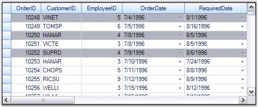
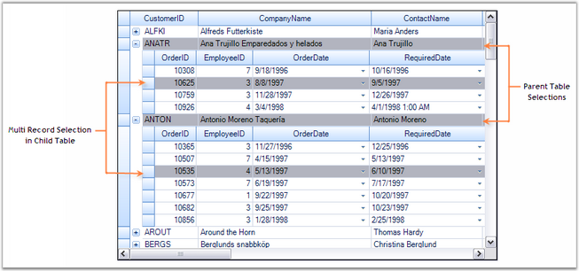

Grid Table supports selection of multiple records. Each record that is being selected is added into the SelectedRecords collection which manages these records. You can iterate through this collection in order to step through all records marked as selected. When records are added or removed from this collection, the grid raises the events, SelectedRecordsChanging and SelectedRecordsChanged. This section demonstrates how to work with the SelectedRecords collection.
Selecting Multiple Records
Multiple records can be selected at a time by adding the desired record specifications into the SelectedRecords collection. The following code example illustrates this process. It selects the records with indexes 2, 4 and 0 by adding them into the SelectedRecords collection.
|
[C#]
Record r1 = this.gridGroupingControl1.Table.Records[2]; Record r2 = this.gridGroupingControl1.Table.Records[4]; Record r3 = this.gridGroupingControl1.Table.Records[0];
Table t = this.gridGroupingControl1.Table; t.SelectedRecords.Add(r1); t.SelectedRecords.Add(r2); t.SelectedRecords.Add(r3); |
|
[VB.NET]
Dim r1 As Record = Me.gridGroupingControl1.Table.Records(2) Dim r2 As Record = Me.gridGroupingControl1.Table.Records(4) Dim r3 As Record = Me.gridGroupingControl1.Table.Records(0)
Dim t As Table = Me.gridGroupingControl1.Table t.SelectedRecords.Add(r1) t.SelectedRecords.Add(r2) t.SelectedRecords.Add(r3) |

Figure 368: Selecting Multiple Records
 Note: For more details, refer the following
browser sample:
Note: For more details, refer the following
browser sample:
<Install Location>\Syncfusion\EssentialStudio\[Version Number]\Windows\Grid.Grouping.Windows\Samples\2.0\Selection\Multi Record Selection Demo
RecordSelection with NestedTables
When nested tables are used, you can extend the record selection mechanisms to each of the child table by accessing the SelectedRecords collection of the desired child table.
|
[C#]
// For Parent Table. Record r1 = this.gridGroupingControl1.Table.Records[1]; Record r2 = this.gridGroupingControl1.Table.Records[2];
Table t = this.gridGroupingControl1.Table; t.SelectedRecords.Add(r1); t.SelectedRecords.Add(r2); t.SelectedRecords.Add(r3);
// For Child Table. Record cr1 = this.gridGroupingControl1.GetTable("Orders").Records[7]; Record cr2 = this.gridGroupingControl1.GetTable("Orders").Records[12];
this.gridGroupingControl1.GetTable("Orders").SelectedRecords.Add(or1); this.gridGroupingControl1.GetTable("Orders").SelectedRecords.Add(or2); |
|
[VB.NET]
' For Parent Table. Dim r1 As Record = Me.gridGroupingControl1.Table.Records(1) Dim r2 As Record = Me.gridGroupingControl1.Table.Records(2)
Dim t As Table = Me.gridGroupingControl1.Table t.SelectedRecords.Add(r1) t.SelectedRecords.Add(r2) t.SelectedRecords.Add(r3)
' For Child Table. Dim cr1 As Record = Me.gridGroupingControl1.GetTable("Orders").Records(7) Dim cr2 As Record = Me.gridGroupingControl1.GetTable("Orders").Records(12)
Me.gridGroupingControl1.GetTable("Orders").SelectedRecords.Add(or1) Me.gridGroupingControl1.GetTable("Orders").SelectedRecords.Add(or2) |

Figure 369: Record Selection in Nested Tables
Record Search
To search for a particular record, the SelectedRecords collection provides a method called FindRecord(). This method search for the occurrences of the specified record and returns a zero-based index of the occurrence found. If there is no such record, then returns -1. It comes in two versions: one accepts the whole record as its parameter and the other accepts the position of the record in the underlying datasource.
|
[C#]
Record rec = this.gridGroupingControl1.Table.Records[2];
// Search for the record 'rec'. int index = this.gridGroupingControl1.Table.SelectedRecords.FindRecord(rec);
// Search for the record with index 2. int index2 = this.gridGroupingControl1.Table.SelectedRecords.FindRecord(2); |
|
[VB.NET]
Dim rec As Record = Me.gridGroupingControl1.Table.Records(2)
' Search for the record 'rec'. Dim index As Integer = Me.gridGroupingControl1.Table.SelectedRecords.FindRecord(rec)
' Search for the record with index 2. Dim index2 As Integer = Me.gridGroupingControl1.Table.SelectedRecords.FindRecord(2) |
Removing a RecordSelection
A record can be removed from the SelectedRecords collection by using the methods Remove() and RemoveAt(). A call to Remove() requires you to specify the whole record itself as parameter. In case if you know only the record index, you could then make use of RemoveAt(). Both the methods remove the specified record from the collection and mark it as deselect.
|
[C#]
Record rec = this.gridGroupingControl1.Table.Records[2];
// Remove the record 'rec'. this.gridGroupingControl1.Table.SelectedRecords.Remove(rec);
// Remove the record at the index 2. this.gridGroupingControl1.Table.SelectedRecords.RemoveAt(2); |
|
[VB.NET]
Dim rec As Record = Me.gridGroupingControl1.Table.Records(2)
' Remove the record 'rec'. Me.gridGroupingControl1.Table.SelectedRecords.Remove(rec)
' Remove the record at the index 2. Me.gridGroupingControl1.Table.SelectedRecords.RemoveAt(2) |
Clear Selection
To remove all the selections from the grid, you can call SelectedRecords.Clear() method that removes all the elements from the collection and mark them as deselect.
|
[C#]
this.gridGroupingControl1.Table.SelectedRecords.Clear(); |
|
[VB.NET]
Me.gridGroupingControl1.Table.SelectedRecords.Clear() |
Note: For more details, refer the following
browser sample:
<Install Location>\Syncfusion\EssentialStudio\[Version Number]\Windows\Grid.Grouping.Windows\Samples\2.0\Selection\Multi Record Selection Demo